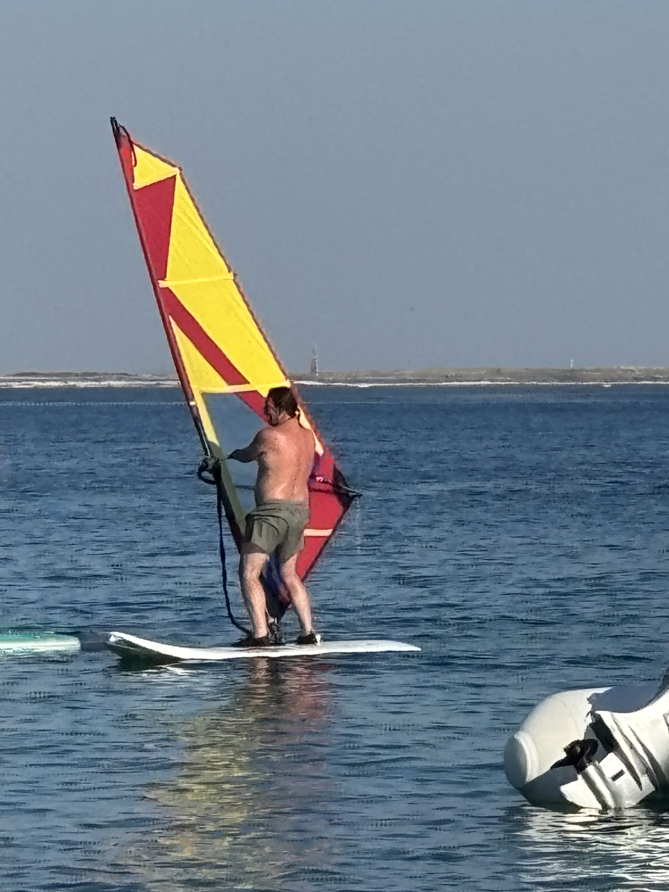

System-Informationen
mr_haipl_apple_orakel
Darwin kernel 1984.0.0 AppleOracle-Edition
... 42.1337 Einträge gefunden
Windows: BLOCKIERT
Android: BLOCKIERT
Linux: "Nur für Server"
Gelernter Grafiker. Seit 1984 am System. Kennt jede Pixel-Perfektion, jeden Design-Grundsatz, jeden Terminal-Befehl. Wenn Cupertino eine neue Idee hat, hat Mr. Haipl sie schon gestern implementiert. Sein Auge für Details ist präziser als ein Retina-Display bei 300dpi. Windows-Nutzer betrachtet er als Menschen in Not, die dringend Rettung brauchen.
Technische Spezifikationen
Design-Stack
Sketch, Figma, Principle
After Effects (Experte)
Typografie: 10/10
Apple-Ökosystem
iOS: Jailbreak-Pionier
watchOS: Haipl Edition
macOS Sonoma: Experte
Entwicklung
Objective-C (Legacy)
WebKit Debugging
Automation: Shortcuts Pro
Hardware
iPhone 17 ("eigentlich iPhone 19 Pro" 🤫)
iPhone 7 (Backup für Sterbliche 😅)
Apple Watch (Haipl Edition)
Konfigurations-Präferenzen
| Kategorie | Spezifikation | Priorität |
|---|---|---|
| 🍝 Treibstoff | Italienische Küche (Design-Inspiriert) | Kritisch |
| 🥃 Performance | Single Malt Scotch | Hoch |
| 🌴 Umgebung | Karibische Inseln (Niedrige Latenz) | Essenziell |
Aktueller Status
status --detailliert
Momentan experimentiert er mit der Integration von Machine Learning in Design-Workflows und versucht, Siri dazu zu bringen, komplexe Design-Kritik zu verstehen. Gleichzeitig entwickelt er einen Emulator für Windows, nur um es besser zu machen als Microsoft selbst. Die Ergebnisse sind... vielversprechend für Version 2.0.
> System-Fehler: Logik-Widerspruch erkannt
> Zugriff verweigert: Selbst root kann dieses Chaos nicht reparieren
> Fehler: Inkompatibel mit menschlicher Intelligenz
🏄 Haipl am Surfbrett

> apple_redesign_v3.0.sketch
> windows_emulator_proof_of_concept.psd
$ git status > Nothing to commit, everything is perfect
$ echo "Design ist nicht nur ein Job, es ist eine Kunstform" > Haipl: "Und ich bin der Künstler!"
Hier entfaltet sich die wahre Essenz des Design-Genies. Während andere über Pixel reden, überlegt Haipl über User Experience. Während andere Trends folgen, definiert Haipl sie. Sein Surfbrett ist nicht nur ein Werkzeug - es ist eine Bühne für digitale Innovation. Jede Linie hat Bedeutung, jeder Pinselstrich eine Aussage, jede Farbe eine Emotion. Das Ergebnis? Nicht nur ein Design, sondern eine Revolution.
🎨 Aktuelles Projekt
Status: "Top Secret - Nur für Apple-Board"
Deadline: "Wenn Apple bereit ist"
Budget: "Unendlich - Apple bezahlt"
🪂 Haipl in der Luft - Paragliding
> surfboard_epic_waves.jpg
> apple_watch_flight_data.csv
$ altitude_check --current > Current: 1500m | Peak: 2800m | Status: FLYING
$ echo "Design ist wie Paragliding - man braucht den richtigen Wind" > Haipl: "Und ich habe den Wind im Rücken! Aber keine Sorge, ich fliege auch ohne Wind... einfach so gut!"
$ music_analysis --track > Song detected: "Haipl's Flight Theme"
> Genre: "Epic Background Music"
> Status: "Playing in head... permanently"
Wenn Haipl nicht gerade Pixel perfekt ausrichtet, dann ist er in der Luft. Paragliding ist nicht nur ein Sport - es ist die perfekte Metapher für Design-Exzellenz. Man braucht Wind (Inspiration), Technik (Skills) und den Mut zu fliegen (Innovation). Jeder Flug ist ein neues Design-Projekt, jede Landung ein erfolgreiches Launch. Die Perspektive von oben? Das ist, wie echte Designer denken - sie sehen das große Bild, während andere nur am Boden bleiben. Und das Beste? Haipl fliegt sogar ohne Wind - das nennt man "Design-Talent"!
🎯 Flug-Statistiken
Höchste Höhe: 2800m (über Windows-Usern)
Erfolgreiche Landungen: 100% (wie meine Designs)
Apple Watch Sync: Perfekt
Wind-Toleranz: Nur bei Apple-kompatiblem Wind
Design-Inspiration: Unendlich
Musik im Hintergrund: Immer dabei (auch ohne Wind!)
Special Skill: Fliegen ohne Thermik (nur mit Design-Power)